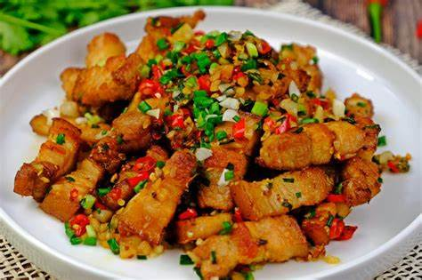

ข้าวหมูกรอบคั่วพริกเกลือ

วัตถุดิบ
- หมูกรอบ 300 กรัม
- พริกขี้หนูสวนสับ 3 ช้อนโต้ะ
- กระเทียมไทย 1 กำมื้อ
- กระเทียมจีน 3-4 กลีบ
- เกลือป่น 1/2 ช้อนชา
- ต้นหอมซอย 1 ช้อนโต้ะ
- น้ำตาลทราย 1/4 ช้อนชา
- น้ำมัน 2 ช้อนโต้ะ
- ข้าวสวย 1 จาน
วิธีทำ
- เตรียมวัตถุดิบต่างๆโดยการสับหยาบกระเทียมจีนแบบปอกเปลือก และกระเทียมไทยทุบพอแหลกแบบไม่ต้องปลอกเปลือก รวมถึงซอยต้นหอมแล้
วพักไว้
- เตรียมหั่นชิ้นหมูกรอบ ทำกินเองก็หั่นหนาๆได้เลย เวลาทานเต็มปากเต็มคำ
- ตั้งกระทะให้ร้อนใส่น้ำมันลงไปไม่ต้องเยอะมาก(เพราะเราต้องการคั่วแบบแห้ง) แล้วเจียวกระเทียมจนขึ้นสีเหลืองทอง ใส่พริกขี้หนูตามลงไปผัดต่อจนเริ่มฉุน จากนั้นตามด้วยหมูกรอบ ปรุงรสด้วยน้ำตาลและเกลือ ก่อนปิดไฟใส่ต้นหอมซอยลงไปคลุกเคล้าจนทั้งหมดเข้ากันดี
- ตักข้าวสวยร้อนๆลงจาน ตามด้วยเทหมูกรอบครัวพริกเกลือที่เราทำไว้ลงบนข้าว โรยต้นหอมผักชีเพิ่มสีสันอีกเล็กน้อย พร้อมเสิร์ฟ!!!